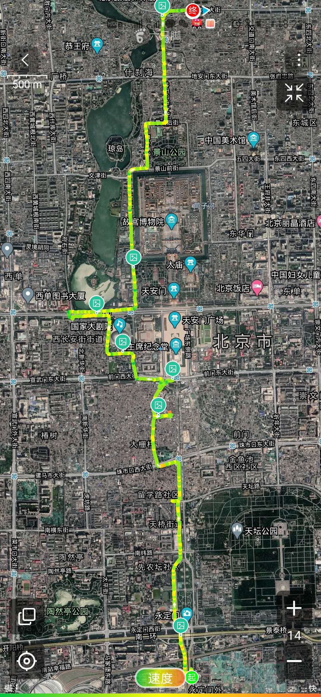
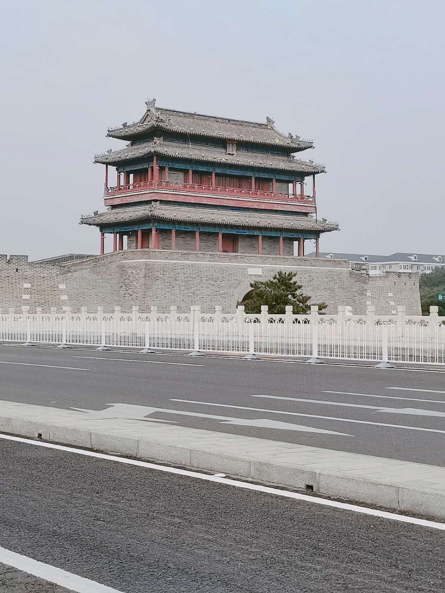
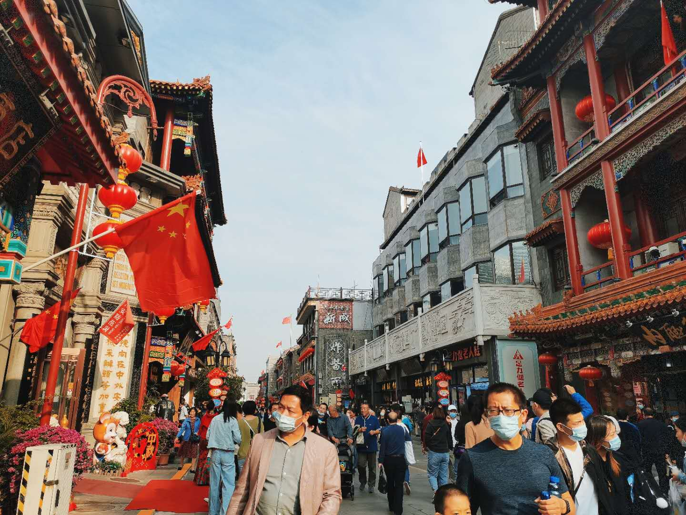
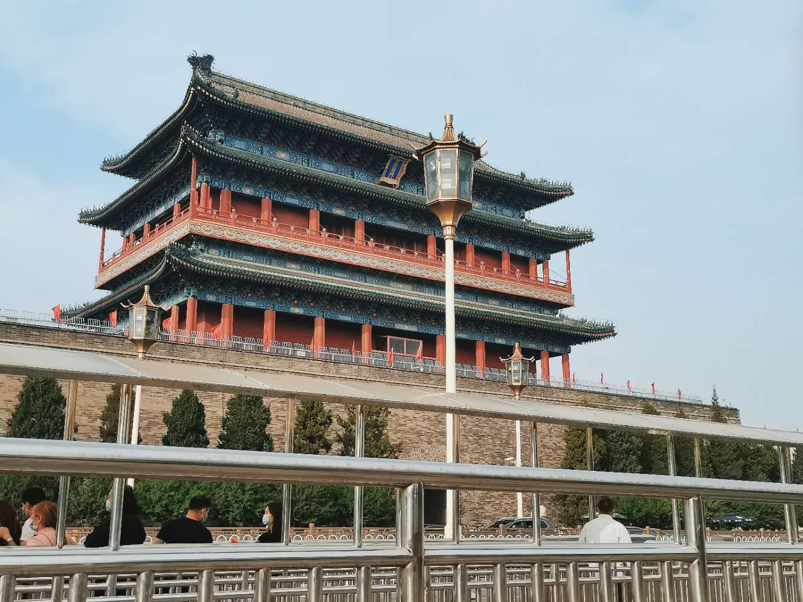
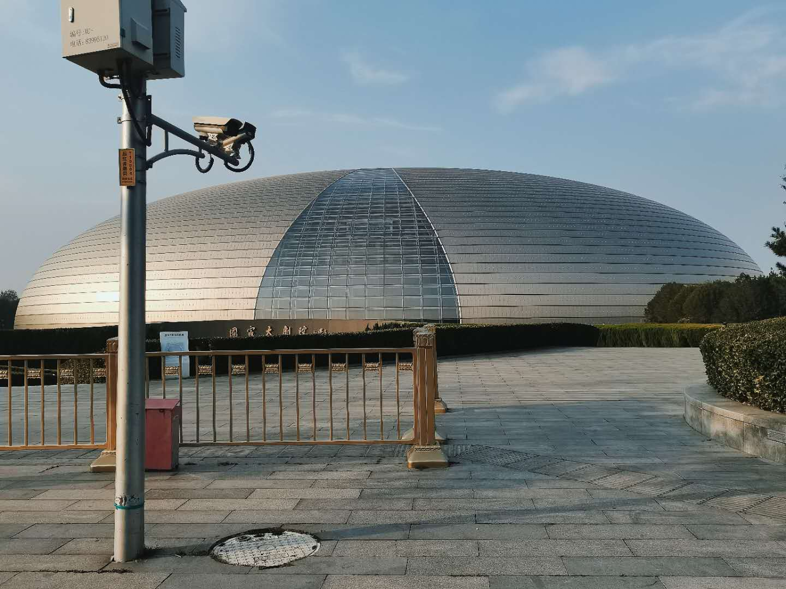
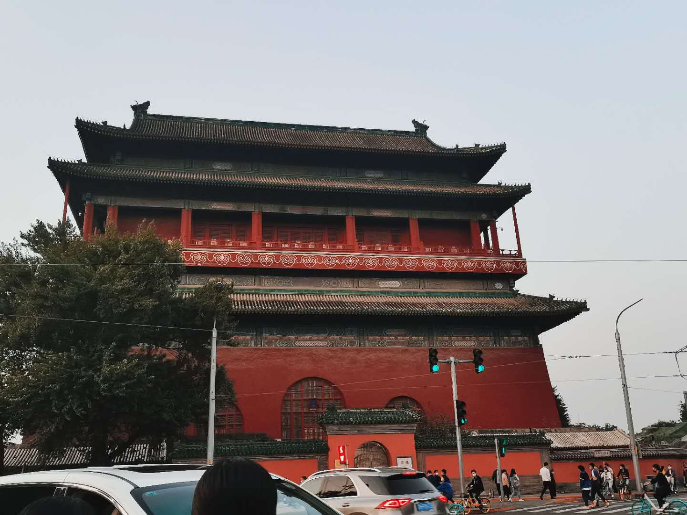

2020年10月1日，里程13.14公里。地铁至永定门外地铁站，一路向北，行至鼓楼，乘地铁返回。
13：30 吃过午饭，从燕园出发，由北大东门地铁站乘坐4号线，在北京南站地铁站倒换14号线，到达永定门外地铁站。
14：29 到达永定门
继续向北，接续经过自然博物馆和天坛公园。
15：21 到达大栅栏
在大栅栏看到了仍处旧址老房的瑞蚨祥、六必居，也有已经门厅更新的同仁堂等等。
15：44 到达正阳门
16：09 到达国家大剧院
国家大剧院本不是计划路程中的，但因为长安街附近的交通管制不得已绕行，椭球壳体外环绕人工湖，像一滴晶莹水珠。
过了国家大剧院，继续管制，继续绕行，沿长安街向一路西走终于找到地下通道过了马路，途经新华门，在天安门西边左转进入南长街，经过中山公园，故宫，景山公园，继续向北。
17:54 到达鼓楼，乘地铁返回。一下午的形成就这样结束啦！
一路逛吃，不停绕行，最后还是到达了目的地。
据说北京城的建筑沿着这条对称轴对称分布，喜欢北京的格局，喜欢北京的大街小巷。
去长安街一定要记着带身份证；
故宫今年建成六百年，参观故宫需要提前前前前预约哦
故宫博物院官方网站